例程
每天用的应用，一次打开
把一起用的应用、链接和游戏归到一个例程里。点按后，它们会在新桌面上各就各位地打开；结束时，只关闭这些窗口。
比如点按“开始工作”，邮件、浏览器和文档就会在你选好的显示器和位置上打开。
01
打开时，位置也安排好
点按例程，会新建一个虚拟桌面，每个应用都在你选好的显示器和位置上打开，无论是全屏还是左半边。菜单栏显示例程名称，也可以显示你在那里停留了多久。
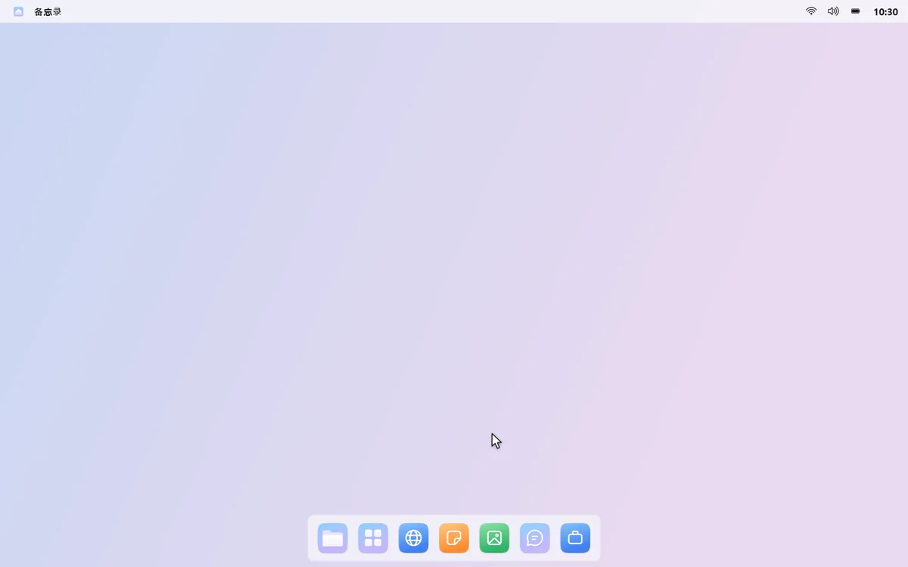
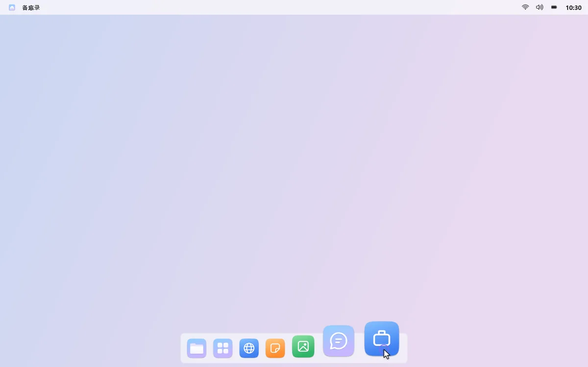
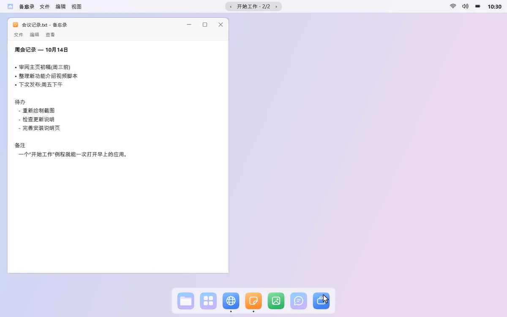
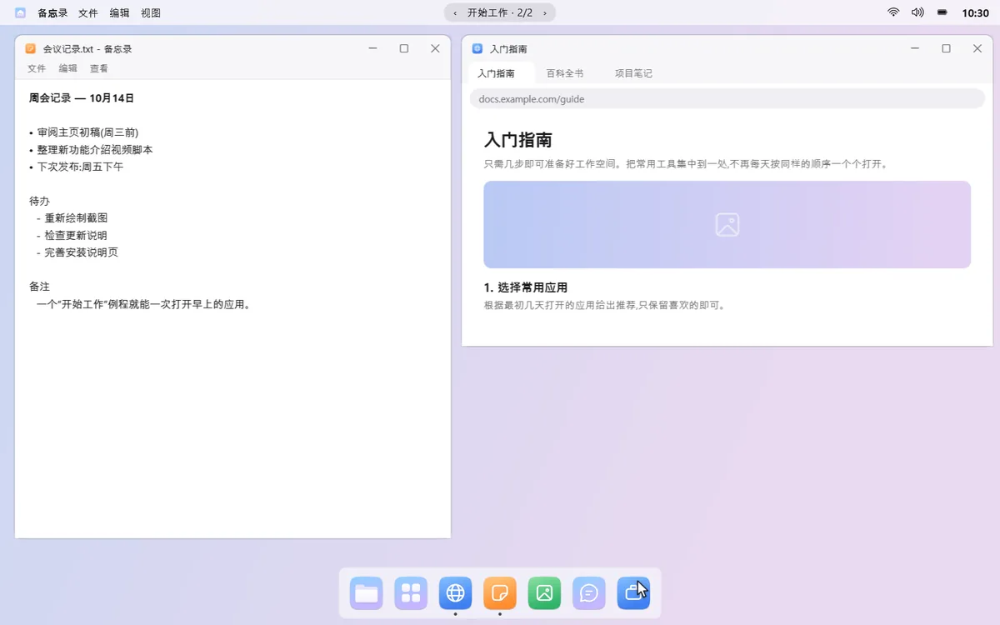
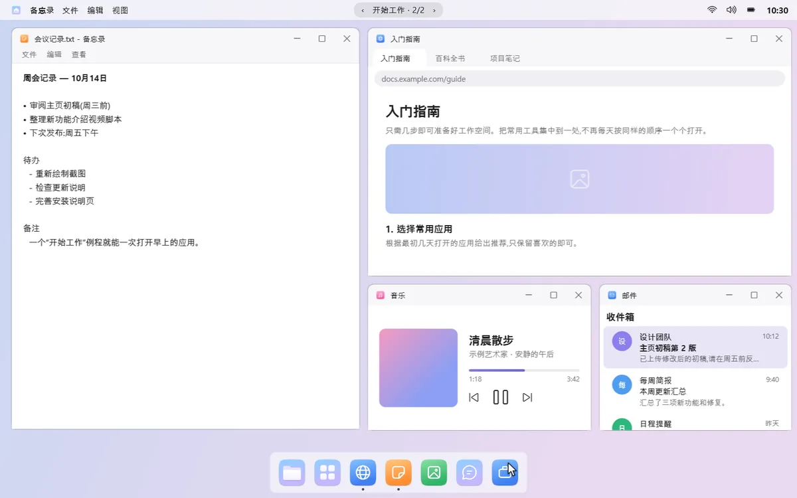
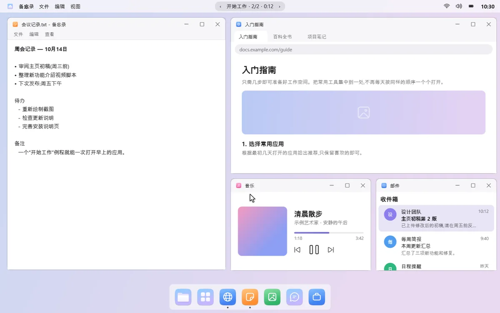
02
把现在的屏幕存下来
把窗口摆成你喜欢的样子，然后选择“将当前屏幕存为例程…”，就完成了。mongdock 还会发现你常一起打开的应用，并推荐例程。
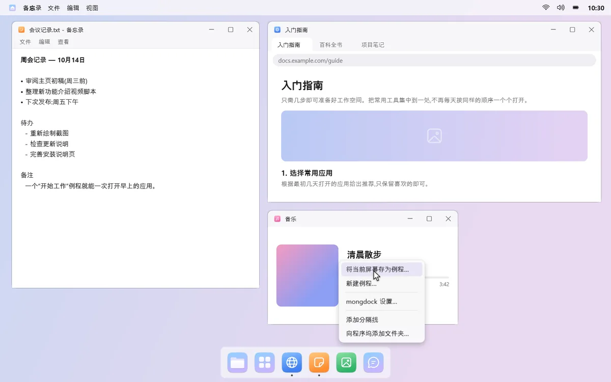
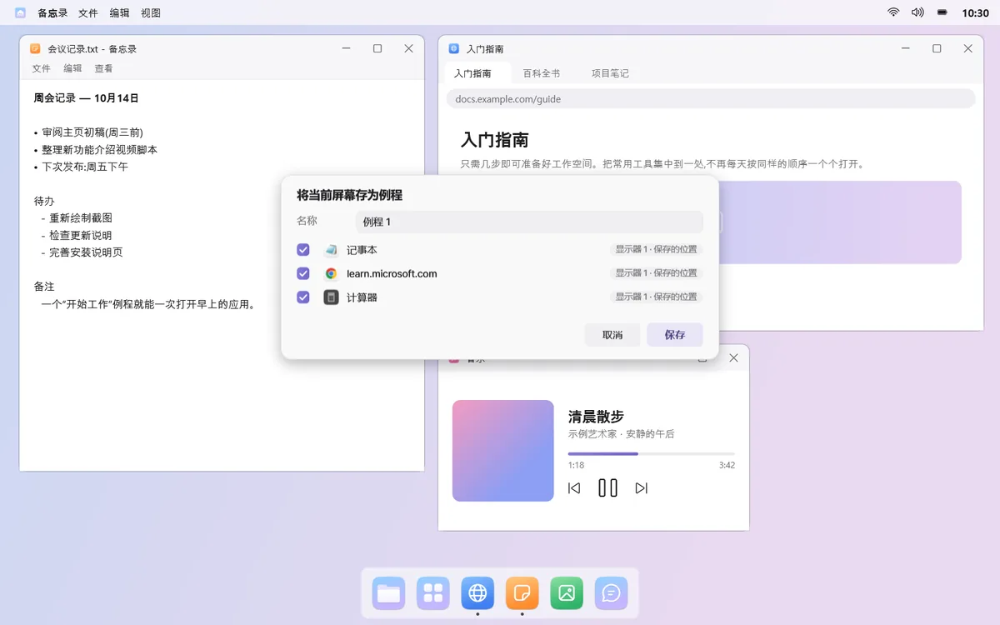
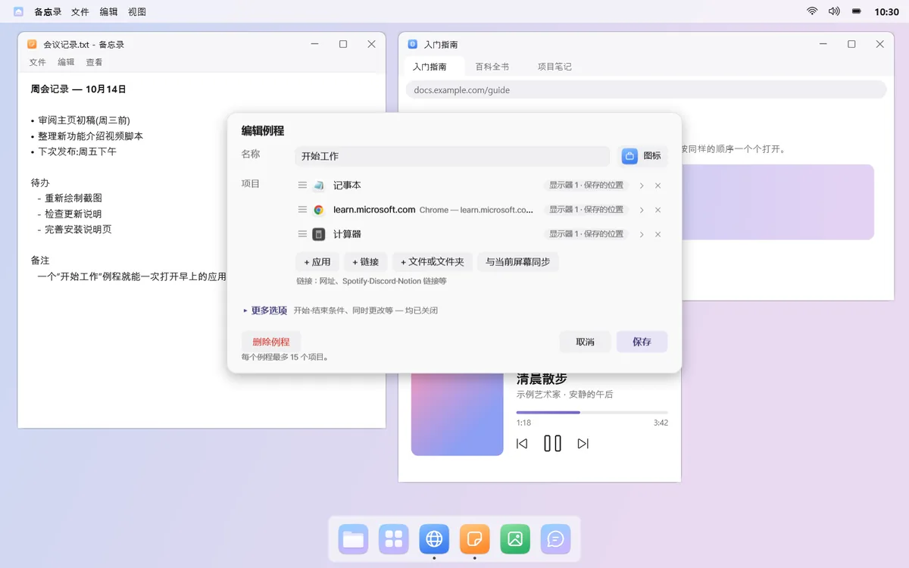
03
应用、链接、游戏都行
一个例程里可以混合放入应用、能打开多个标签页的链接，以及文件或文件夹。Steam、Epic、GOG 的游戏和启动器也能放进去，例程一打开就会启动。
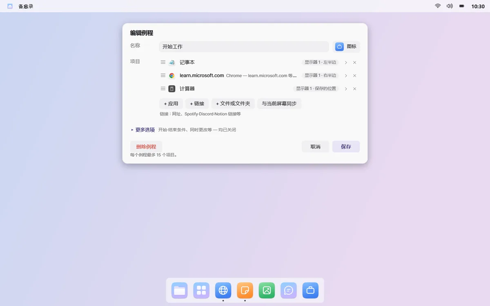
04
时候到了，先问一声
插上耳机或显示器、打开电脑、到了设定的星期和时间，或启动某个应用时，mongdock 会问“要打开吗？”。同一条件每天最多问一次。默认只在你点按时打开。
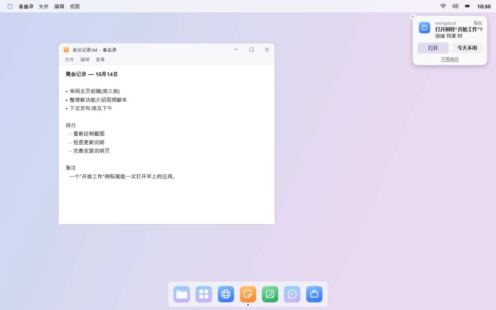
05
结束时也干净
“结束例程”只关闭例程打开的窗口，其他窗口一概不动。如果例程切换了声音输出、音量、勿扰或程序坞自动隐藏，结束时会恢复原样。
开始与结束条件等选项都在编辑窗口的“更多选项”里，默认全部关闭。
须知
- 只运行一个窗口的应用（如 Discord）如果已经在运行，就不会再打开，mongdock 会告诉你它在哪个桌面上。
- 结束例程时，正在询问是否保存的窗口会保留不关。
- 打开例程后如果重启 mongdock，就无法知道哪些窗口是例程打开的，需要你自己关闭。